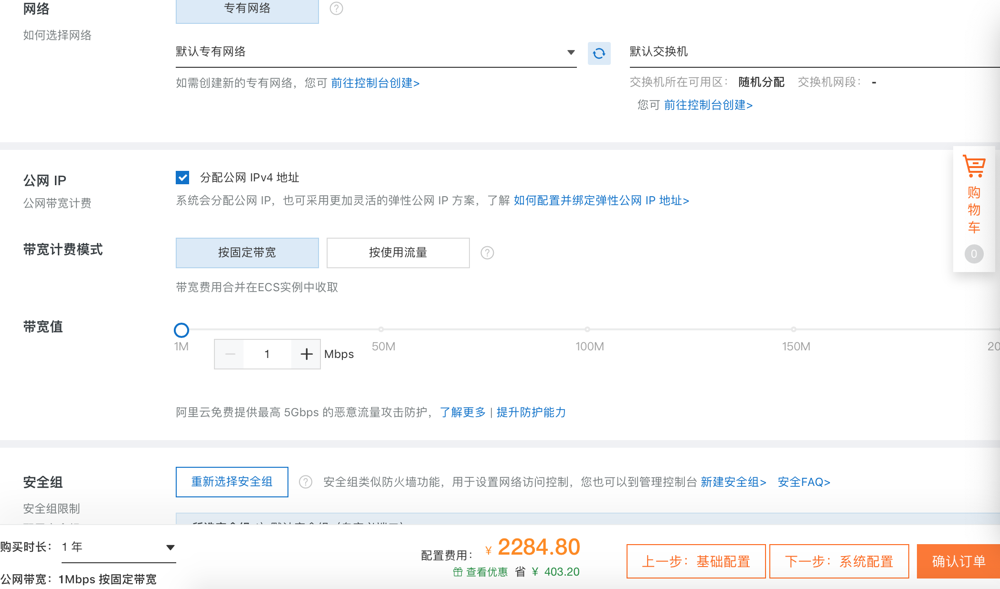
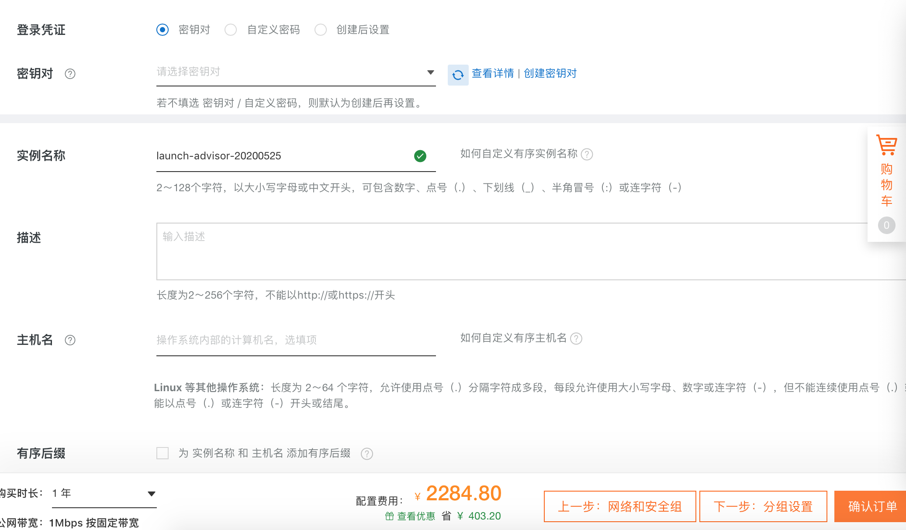
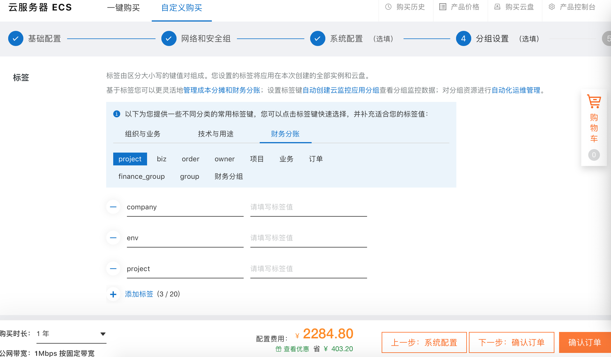
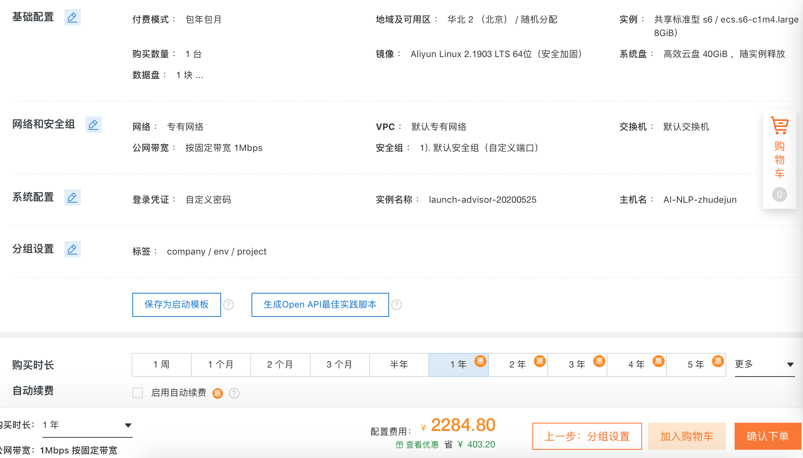
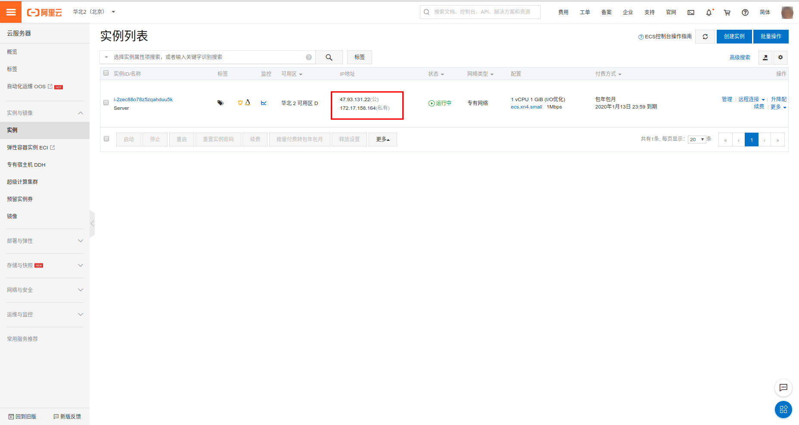
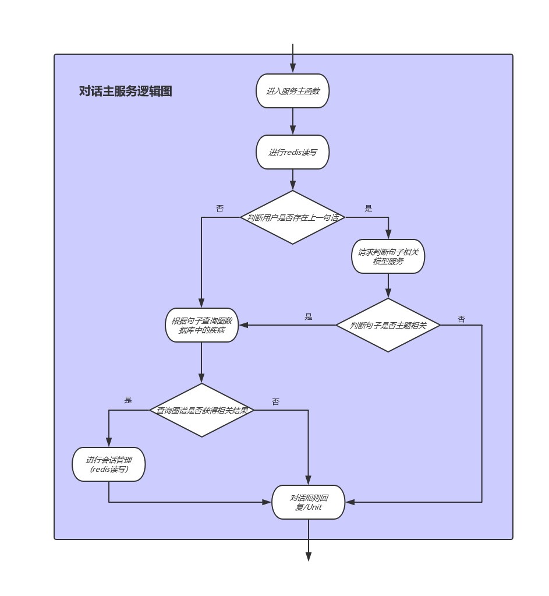

第七章:在线部分
7.1 在线部分简要分析¶
- 学习目标:
- 了解在线部分的核心组成.
- 了解各个核心组成部分的作用.
- 在线部分架构图:

- 在线部分简要分析:
- 根据架构图，在线部分的核心由三个服务组成，分别是werobot服务，主要逻辑服务，句子相关模型服务. 这三个服务贯穿连接整个在线部分的各个模块.
- werobot服务作用:
- 用于连接微信客户端与后端服务, 向主要逻辑服务发送用户请求，并接收结构返回给用户.
- 主要逻辑服务作用:
- 用于处理核心业务逻辑, 包括会话管理，请求句子相关模型服务，查询图数据库，调用Unit API等.
- 句子相关模型服务:
- 用于封装训练好的句子相关判断模型, 接收来自主要逻辑服务的请求, 返回判断结果.
7.2 werobot服务构建¶
- 学习目标:
- 掌握werobot服务的构建过程.
- werobot服务的构建过程可分为四步:
- 第一步: 获取服务器公网IP
- 第二步: 配置微信公众号
- 第三步: 使用werobot启动服务脚本
- 第四步: 使用微信公众号进行测试
- 第一步: 获取服务器公网IP
- 登陆阿里云官网(https://www.aliyun.com/product/ecs):
- 进行基本配置, 选择所在地域, 实例类型, 镜像, 存储, 购买时长
- 选择网络和安全组(默认配置)

- 设置密码, 实例名称, 主机名

- 配置分组设置(默认配置)

- 确认订单并支付

- 查看服务器公网IP

- 第二步: 使用公网IP配置微信公众号
- 注册微信订阅号(https://mp.weixin.qq.com), 并在基本配置中进行URL和Token的设定
- 第三步: 使用werobot启动服务脚本
- 安装werobot
pip install werobot
- 进行启动脚本的编写
# 导入werobot和发送请求的requests
import werobot
import requests
# 主要逻辑服务请求地址
url = "http://161.117.187.37:5000/v1/main_serve/"
# 服务超时时间
TIMEOUT = 3
# 声明微信访问请求【框架将辅助完成微信联通验证】
robot = werobot.WeRoBot(token="doctoraitoken")
# 设置所有请求（包含文本、语音、图片等消息）入口
@robot.handler
def doctor(message, session):
try:
# 获得用户uid
uid = message.source
try:
# 检查session，判断该用户是否第一次发言
# 初始session为{}
# 如果session中没有{uid:"1"}
if session.get(uid, None) != "1":
# 将添加{uid:"1"}
session[uid] = "1"
# 并返回打招呼用语
return '您好, 我是智能客服小艾, 有什么需要帮忙的吗?'
# 获取message中的用户发言内容
text = message.content
except:
# 这里使用try...except是因为我用户很可能出现取消关注又重新关注的现象
# 此时通过session判断，该用户并不是第一次发言，会获取message.content
# 但用户其实又没有说话, 获取message.content时会报错
# 该情况也是直接返回打招呼用语
return '您好, 我是智能客服小艾, 有什么需要帮忙的吗 ?'
# 获得发送主要逻辑服务的数据体
data = {"uid": uid, "text": text}
# 向主要逻辑服务发送post请求
res = requests.post(url, data=data, timeout=TIMEOUT)
# 返回主要逻辑服务的结果
return res.text
except Exception as e:
print("出现异常:", e)
return "对不起, 机器人客服正在休息..."
# 让服务器监听在 0.0.0.0:80
robot.config["HOST"] = "0.0.0.0"
robot.config["PORT"] = 80
robot.run()
- 代码位置: /data/wr.py
- 启动服务脚本
python /data/wr.py
- 第四步: 使用微信进行测试
- 小节总结:
- 学习了werobot服务的构建过程:
- 第一步: 获取服务器公网IP
- 第二步: 配置微信公众号
- 第三步: 使用werobot启动服务脚本
- 第四步: 使用微信公众号进行测试
- 学习了werobot服务的构建过程:
7.3 主要逻辑服务¶
- 学习目标:
- 了解该服务中的主要逻辑.
- 掌握构建主要逻辑服务的过程.
- 主要逻辑图:

-
逻辑图分析:
-
主要逻辑服务接收werobot发送的请求后，根据用户id查询redis查找用户上一次说过的话，根据结果判断是否为他的第一句.
-
如果是第一句话，直接查询数据库，判断句子中是否包含症状实体，并返回该症状连接的疾病，并填充在规则对话模版中，如果查询不到则调用Unit API返回结果.
-
如果不是该用户的第一句话,则连同上一句话的内容一起请求句子相关模型服务，判断两句话是否讨论同一主题,如果是,则继续查询图数据库，如果不是，使用unit api返回结果.
-
- 构建主要逻辑服务的步骤:
- 第一步: 导入必备工具和配置
- 第二步: 完成查询neo4j数据库的函数
- 第三步: 编写主要逻辑处理类
- 第四步: 编写服务中的主函数
- 第五步: 使用gunicorn启动服务
- 第六步: 编写测试脚本并进行测试:
- 第一步: 导入必备工具和配置
# 服务框架使用Flask
# 导入必备的工具
from flask import Flask
from flask import request
app = Flask(__name__)
# 导入发送http请求的requests工具
import requests
# 导入操作redis数据库的工具
import redis
# 导入加载json文件的工具
import json
# 导入已写好的Unit API调用文件
from unit import unit_chat
# 导入操作neo4j数据库的工具
from neo4j import GraphDatabase
# 从配置文件中导入需要的配置
# NEO4J的连接配置
from config import NEO4J_CONFIG
# REDIS的连接配置
from config import REDIS_CONFIG
# 句子相关模型服务的请求地址
from config import model_serve_url
# 句子相关模型服务的超时时间
from config import TIMEOUT
# 规则对话模版的加载路径
from config import reply_path
# 用户对话信息保存的过期时间
from config import ex_time
# 建立REDIS连接池
pool = redis.ConnectionPool(**REDIS_CONFIG)
# 初始化NEO4J驱动对象
_driver = GraphDatabase.driver(**NEO4J_CONFIG)
- 代码位置: /data/doctor_online/main_serve/app.py
- 配置文件内容如下:
REDIS_CONFIG = {
"host": "0.0.0.0",
"port": 6379
}
NEO4J_CONFIG = {
"uri": "bolt://0.0.0.0:7687",
"auth": ("neo4j", "********"),
"encrypted": False
}
model_serve_url = "http://0.0.0.0:5001/v1/recognition/"
TIMEOUT = 2
reply_path = "./reply.json"
ex_time = 36000
- 代码位置: /data/doctor_online/main_serve/config.py
- 规则对话模版文件reply.json内容如下:
{
"1": "亲爱的用户, 在线医生一个医患问答机器人，请您说一些当前的症状吧！",
"2": "根据您当前的症状描述, 您可能患有以下疾病, %s, 再想想还有更多的症状吗?",
"3": "对不起, 您所说的内容超出了在线医生的知识范围. 请尝试换一些描述方式！",
"4": "您的这次描述并没有给我带来更多信息，请您继续描述您的症状."
}
- 代码位置: /data/doctor_online/main_serve/reply.json
- 第二步: 完成查询neo4j数据库的函数
def query_neo4j(text):
"""
description: 根据用户对话文本中的可能存在的症状查询图数据库.
:param text: 用户的输入文本.
:return: 用户描述的症状对应的疾病列表.
"""
# 开启一个session操作图数据库
with _driver.session() as session:
# cypher语句, 匹配句子中存在的所有症状节点,
# 保存这些节点并逐一通过关系dis_to_sym进行对应病症的查找, 返回找到的疾病名字列表.
cypher = "MATCH(a:Symptom) WHERE(%r contains a.name) WITH \
a MATCH(a)-[r:dis_to_sym]-(b:Disease) RETURN b.name LIMIT 5" %text
# 运行这条cypher语句
record = session.run(cypher)
# 从record对象中获得结果列表
result = list(map(lambda x: x[0], record))
return result
- 代码位置: /data/doctor_online/main_serve/app.py
- 调用:
if __name__ == "__main__": text = "我最近腹痛!" result = query_neo4j(text) print("疾病列表:", result)
- 输出效果:
疾病列表: ['胃肠道癌转移卵巢', '胃肠道功能紊乱', '胃肠积液', '胃肠型食物中毒', '胃结核']
- 第三步: 编写主要逻辑处理类
class Handler(object):
"""主要逻辑服务的处理类"""
def __init__(self, uid, text, r, reply):
"""
:param uid: 用户唯一标示uid
:param text: 该用户本次输入的文本
:param r: redis数据库的连接对象
:param reply: 规则对话模版加载到内存的对象(字典)
"""
self.uid = uid
self.text = text
self.r = r
self.reply = reply
def non_first_sentence(self, previous):
"""
description: 非首句处理函数
:param previous: 该用户当前句(输入文本)的上一句文本
:return: 根据逻辑图返回非首句情况下的输出语句
"""
# 尝试请求模型服务, 若失败则打印错误结果
try:
data = {"text1": previous, "text2": self.text}
result = requests.post(model_serve_url, data=data, timeout=TIMEOUT)
if not result.text: return unit_chat(self.text)
except Exception as e:
print("模型服务异常:", e)
return unit_chat(self.text)
# 继续查询图数据库, 并获得结果
s = query_neo4j(self.text)
# 判断结果为空列表, 则直接使用UnitAPI返回
if not s: return unit_chat(self.text)
# 若结果不为空, 获取上一次已回复的疾病old_disease
old_disease = self.r.hget(str(self.uid), "previous_d")
if old_disease:
# new_disease是本次需要存储的疾病, 是已经存储的疾病与本次查询到疾病的并集
new_disease = list(set(s) | set(eval(old_disease)))
# res是需要返回的疾病, 是本次查询到的疾病与已经存储的疾病的差集
res = list(set(s) - set(eval(old_disease)))
else:
# 如果old_disease为空, 则它们相同都是本次查询结果s
res = new_disease = list(set(s))
# 存储new_disease覆盖之前的old_disease
self.r.hset(str(self.uid), "previous_d", str(new_disease))
# 设置过期时间
self.r.expire(str(self.uid), ex_time)
# 将列表转化为字符串, 添加到规则对话模版中返回
if not res:
return self.reply["4"]
else:
res = ",".join(res)
return self.reply["2"] %res
def first_sentence(self):
"""首句处理函数"""
# 直接查询图数据库, 并获得结果
s = query_neo4j(self.text)
# 判断结果为空列表, 则直接使用UnitAPI返回
if not s: return unit_chat(self.text)
# 将s存储为"上一次返回的疾病"
self.r.hset(str(self.uid), "previous_d", str(s))
# 设置过期时间
self.r.expire(str(self.uid), ex_time)
# 将列表转化为字符串, 添加到规则对话模版中返回
res = ",".join(s)
return self.reply["2"] %res
- 代码位置: /data/doctor_online/main_serve/app.py
- 第四步: 编写服务中的主函数
# 设定主要逻辑服务的路由和请求方法
@app.route('/v1/main_serve/', methods=["POST"])
def main_serve():
# 接收来自werobot服务的字段
uid = request.form['uid']
text = request.form['text']
# 从redis连接池中获得一个活跃连接
r = redis.StrictRedis(connection_pool=pool)
# 根据该uid获取他的上一句话(可能不存在)
previous = r.hget(str(uid), "previous")
# 将当前输入的文本设置成上一句
r.hset(str(uid), "previous", text)
# 读取规则对话模版内容到内存
reply = json.load(open(reply_path, "r"))
# 实例化主要逻辑处理对象
handler = Handler(uid, text, r, reply)
# 如果previous存在, 说明不是第一句话
if previous:
# 调用non_first_sentence方法
return handler.non_first_sentence(previous)
else:
# 否则调用first_sentence()方法
return handler.first_sentence()
- 第五步: 使用gunicorn启动服务
gunicorn -w 1 -b 0.0.0.0:5000 app:app # -w 代表开启的进程数, 我们只开启一个进程 # -b 服务的IP地址和端口 # app:app 是指执行的主要对象位置, 在app.py中的app对象
- 代码位置: 在/data/doctor_online/main_serve/路径下执行.
- 第六步: 编写测试脚本并进行测试
- 编写测试脚本:
import requests # 定义请求url和传入的data url = "http://0.0.0.0:5000/v1/main_serve/" data = {"uid":"13424", "text": "头晕"} # 向服务发送post请求 res = requests.post(url, data=data) # 打印返回的结果 print(res.text)
- 运行脚本:
python test.py
- 输出效果:
根据您当前的症状描述, 您可能患有以下疾病, 中毒,虫媒传染病,小儿肥厚型心肌病,血红蛋白E病,铍中毒, 再想想还有更多的症状吗?
-
小节总结:
- 学习了服务的主要逻辑:
- 主要逻辑服务接收werobot发送的请求后，根据用户id查询redis查找用户上一次说过的话，根据结果判断是否为他的第一句.
- 如果是第一句话，直接查询数据库，判断句子中是否包含症状实体，并返回该症状连接的疾病，并填充在规则对话模版中，如果查询不到则调用Unit API返回结果.
- 如果不是该用户的第一句话,则连同上一句话的内容一起请求句子相关模型服务，判断两句话是否讨论同一主题,如果是,则继续查询图数据库，如果不是，使用unit api返回结果.
- 构建主要逻辑服务的步骤:
- 第一步: 导入必备工具和配置
- 第二步: 完成查询neo4j数据库的函数
- 第三步: 编写主要逻辑处理类
- 第四步: 编写服务中的主函数
- 第五步: 使用gunicorn启动服务
- 第六步: 编写测试脚本并进行测试
- 学习了服务的主要逻辑:
7.4 句子主题相关任务¶
- 句子主题相关的任务的工作在我们这里使用AI模型实现, 包括模型训练和使用的整个过程, 因此这里内容以独立一章的形成呈现给大家, 具体内容在第八章: 句子主题相关任务